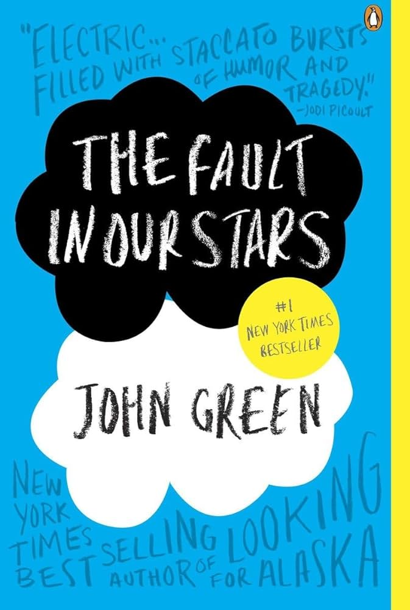
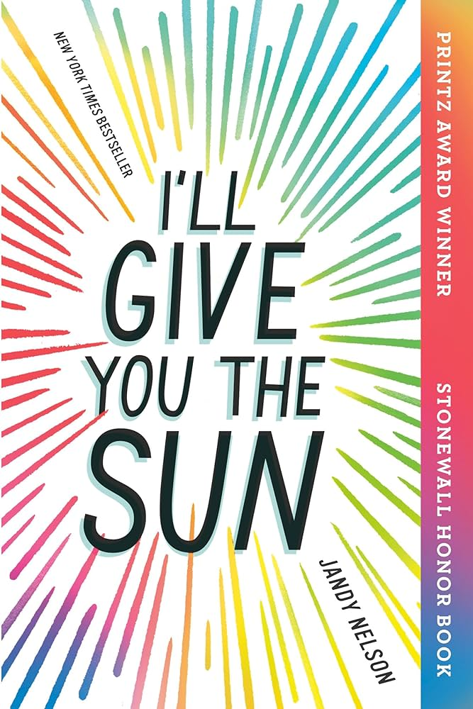
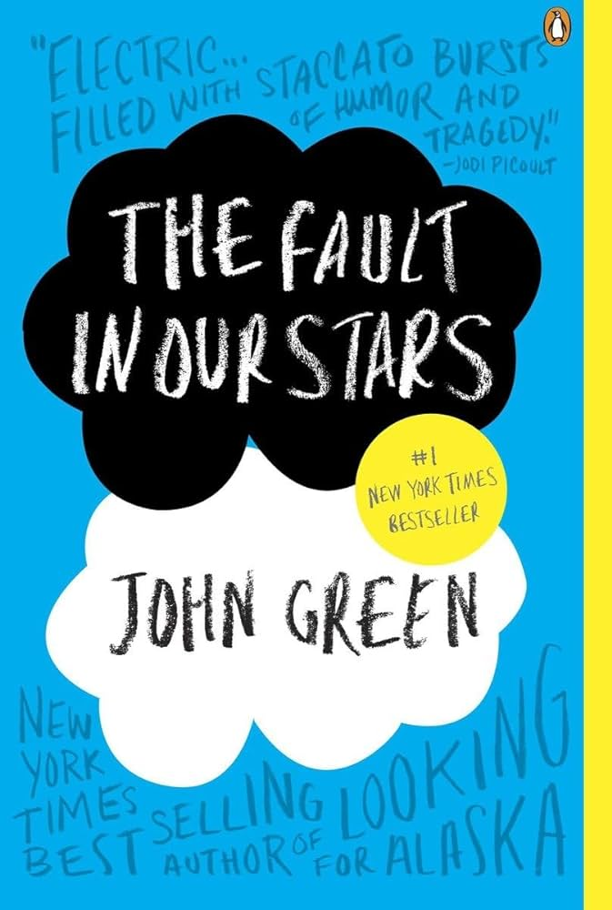
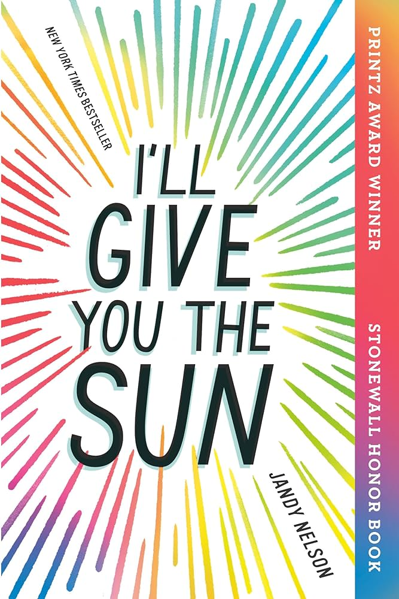
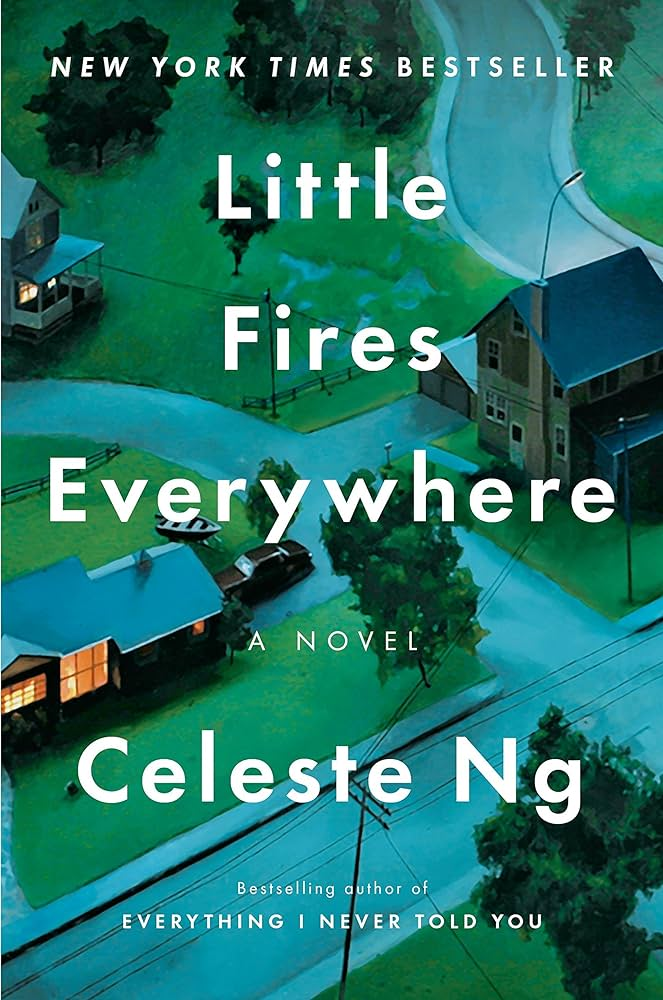
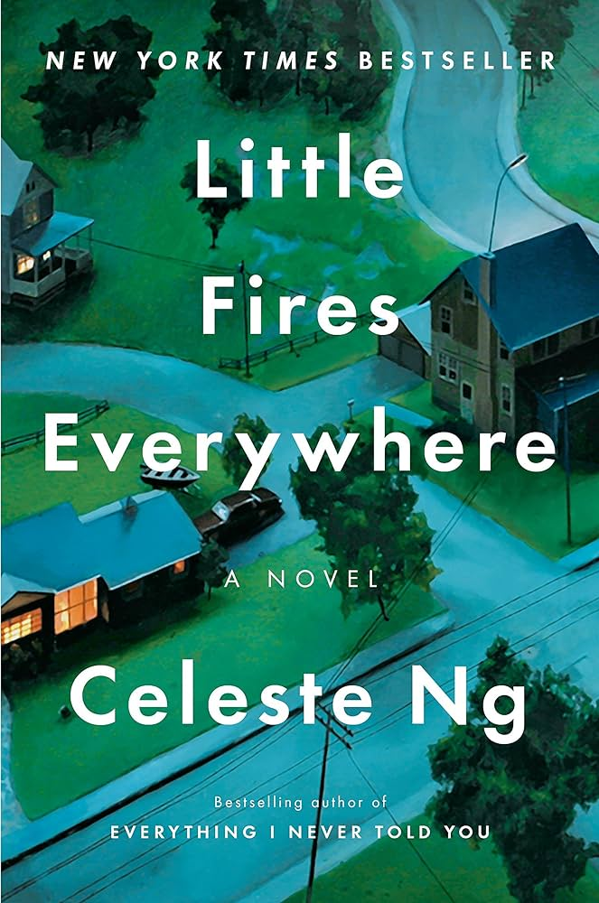
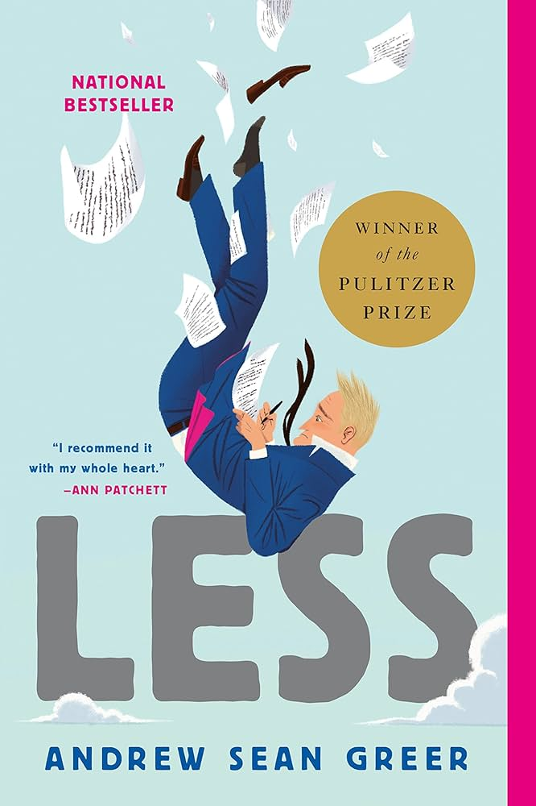
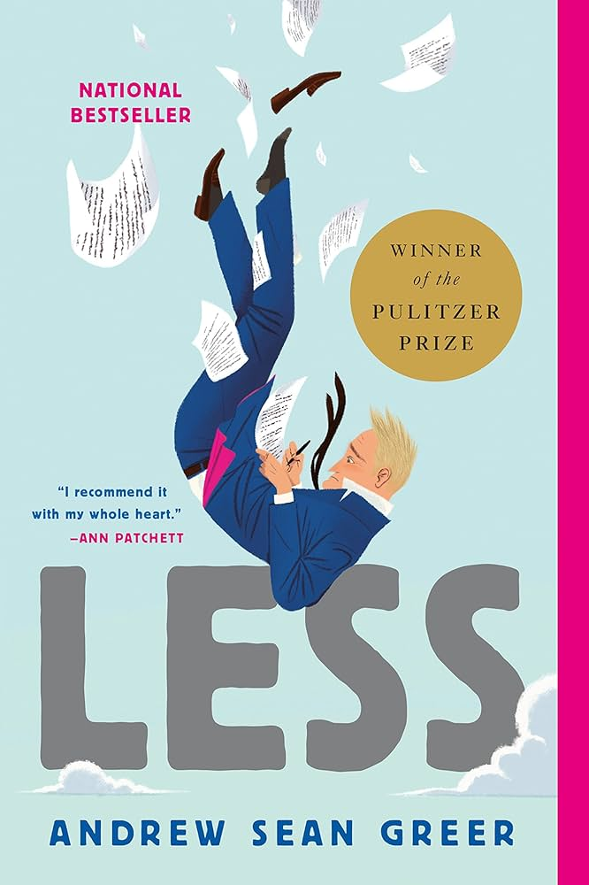

elementary school
a young reader, excited to delve into the magical and mysterious world of reading.


my experience
- Henry and Mudge. I remember sitting in my sister's bed next to my mom, reading out loud. I was so proud to go from level 0 to level 1 Henry and Mudge books.
- Fairy Realm. I memorized where to find these books on the library bookshelf. Every time I finished one, I would beg my mom to bring me to the library to get the next one. Magical and fantastical.
- Diary of a Wimpy Kid. These books made reading easy and funny. My little brother is also named Manny, so I enjoyed the personification of a devious little brother named Manny.
- Double Identity. One of the many Margaret Peterson Haddix mystery books I enjoyed in later elemenary school.
 





 

 
